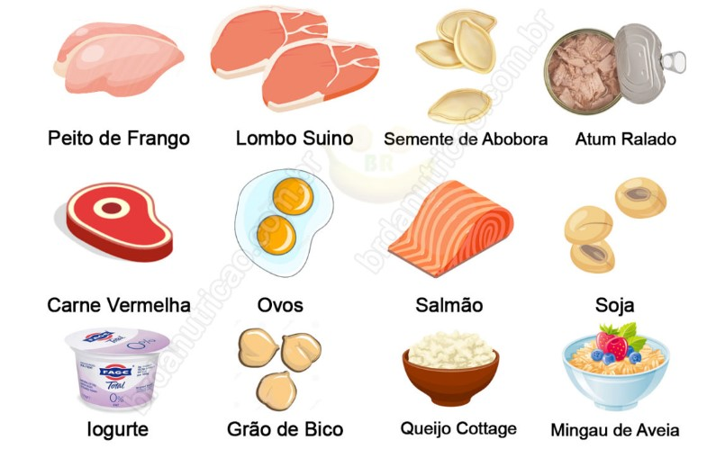

Alimentação
A alimentação direcionada ao treino permite a melhora da performance, sendo assim, a evolução de cargas, repetições e tempo de corrida melhoram. Se você tem como objetivo perder peso ou aumentar a massa muscular, os alimentos pré e pós-treino vão auxiliar esse processo.
Diéta
Melhorar a saúde, ganhar massa muscular, tratar alergias e intolerâncias alimentares e até promover a recuperação do corpo.
Diéta para ganhar massa muscular:
Alimentos que fornecem bom teor de proteínas: carnes,
peixes, ovos, frango, queijo, leite, iogurte. Para os vegetarianos e veganos, a ingestão de
proteína deve ser através de feijão, ervilha, grão de bico, lentilha, soja.

Diéta para perder peso :
A melhor dieta para emagrecer é feita reduzindo o consumo de
calorias e optando por nutrientes ricos em fibras, como frutas e verduras. A primeira coisa
a evitar numa dieta saudável são temperos ou alimentos industrializados, pois contêm excesso
de conservantes, como sódio e açúcar.